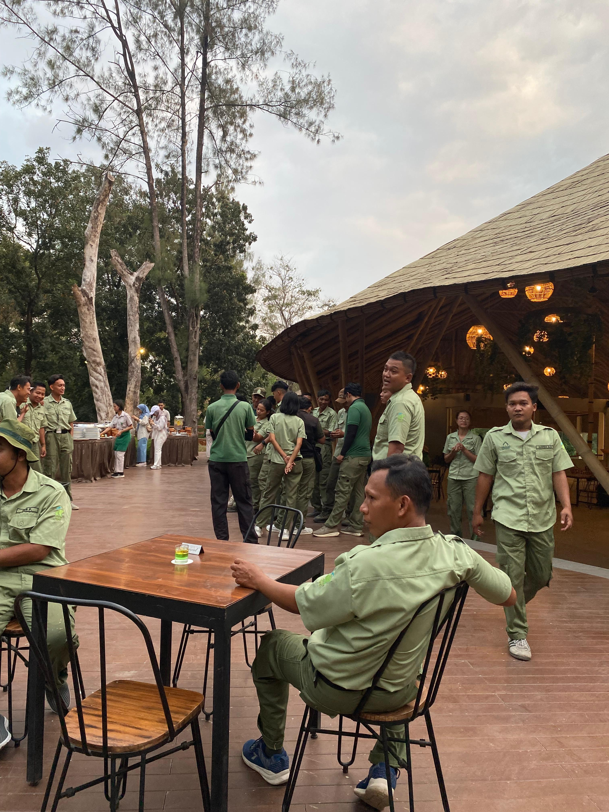
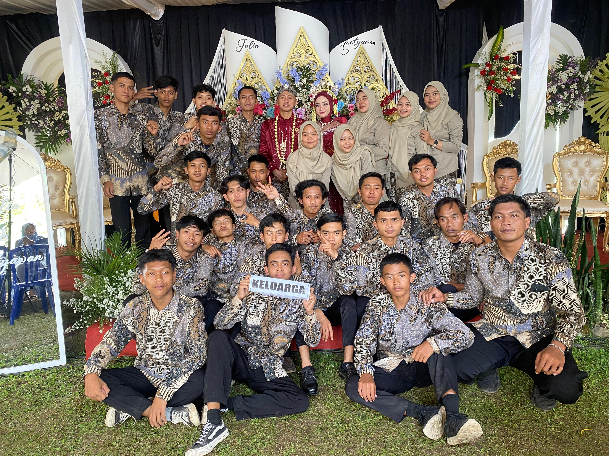
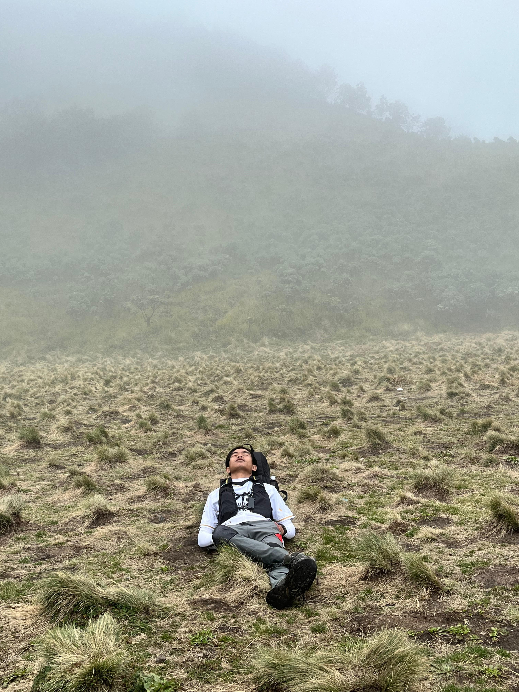
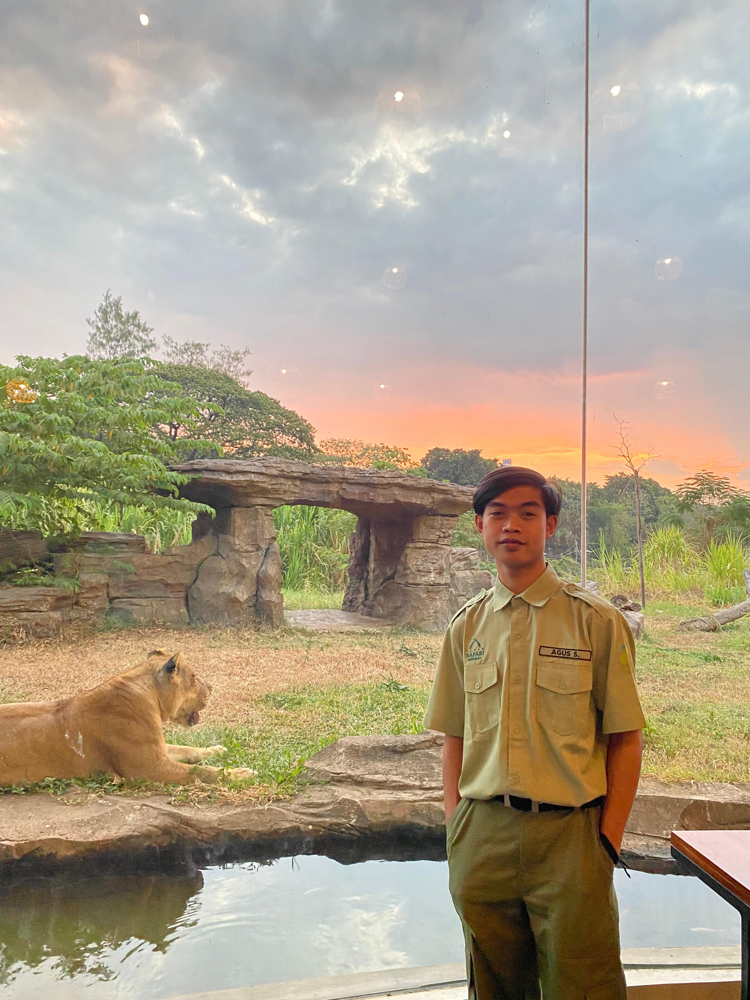
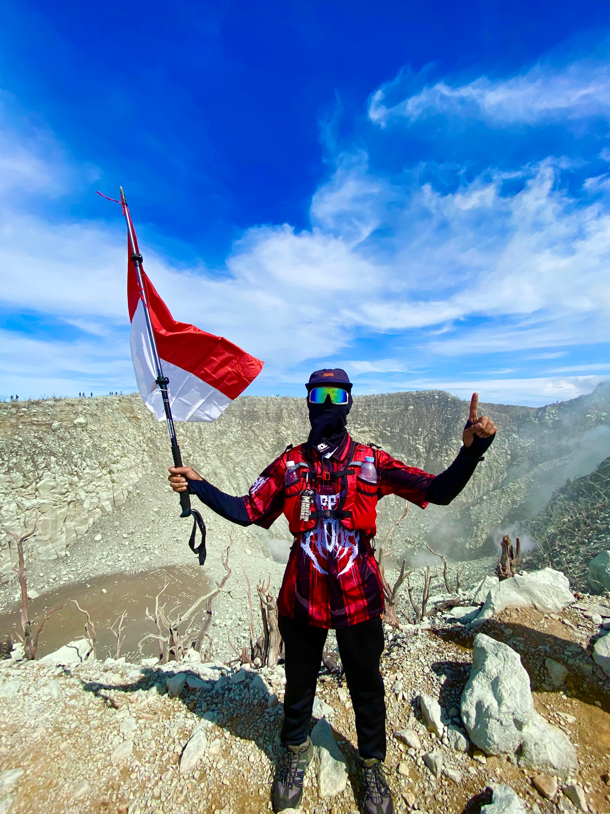

Portfolio
Karya Terbaik Saya




Ingin melihat lebih banyak karya?
Follow Instagram SayaHello, I'm
Lulusan S1 Teknik Informatika dengan pengalaman di berbagai bidang kerja. Ahli dalam dokumentasi dan manajemen gudang.

Profil Profesional

Lulusan S1 Teknik Informatika Universitas Duta Bangsa Surakarta (2017-2021). Memiliki pengalaman kerja di berbagai perusahaan dan organisasi. Beragama Islam, sholat 5 waktu, dan rajin mengaji.
Hobi olahraga dan mendaki gunung. Siap berkontribusi dengan kemampuan terbaik dalam bidang dokumentasi dan manajemen.
S1 Teknik Informatika
Universitas Duta Bangsa Surakarta (2017-2021)
Wetankali, RT 05/ RW 02
Girilayu, Matesih, Karanganyar, Jawa Tengah 57781
Karanganyar, 05 Oktober 1996
Agama: Islam
0812-2810-0040
WhatsApp Available
agusart128@gmail.com
Respon Cepat
Riwayat Kerja & Organisasi
Karya Terbaik Saya



Ingin melihat lebih banyak karya?
Follow Instagram SayaHubungi Saya
Tertarik untuk bekerja sama dalam bidang manajemen gudang atau organisasi? Silakan hubungi saya melalui informasi di bawah.
Wetankali, RT 05/ RW 02, Girilayu, Matesih, Karanganyar, Jawa Tengah 57781